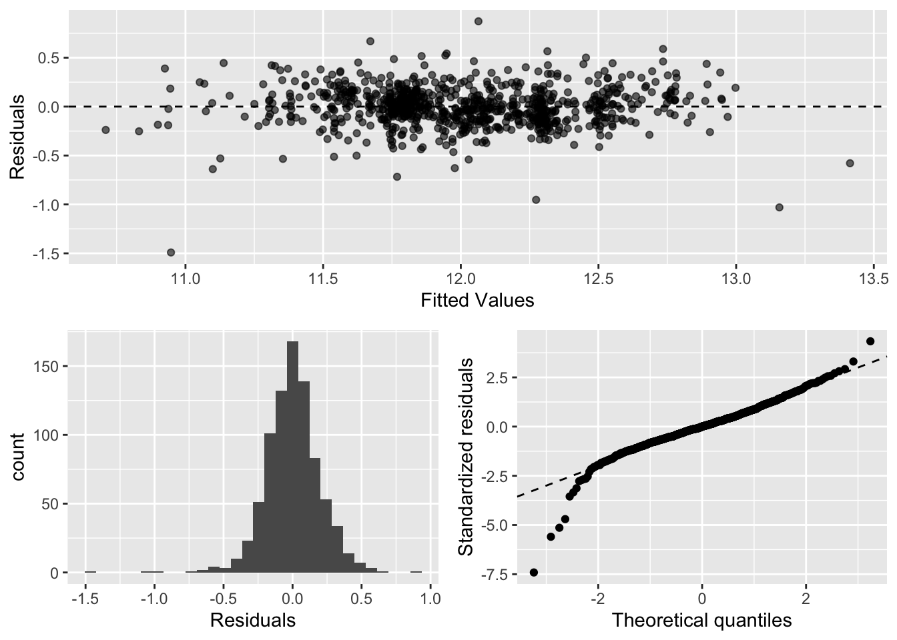

In order to better assess the quality of the model you will produce, the data have been randomly divided into three separate pieces: a training data set, a testing data set, and a validation data set. For now we will load the training data set, the others will be loaded and used later.
rm(list = ls())
load("ames_train.Rdata")Use the code block below to load any necessary packages
library(statsr)
library(dplyr)
library(BAS)
library(ggplot2)
library(gridExtra)
library(gdata)
library(MASS)
library(GGally)
library(corrplot)
source('r_functions.R')When you first get your data, it’s very tempting to immediately begin fitting models and assessing how they perform. However, before you begin modeling, it’s absolutely essential to explore the structure of the data and the relationships between the variables in the data set.
Do a detailed EDA of the ames_train data set, to learn about the structure of the data and the relationships between the variables in the data set (refer to Introduction to Probability and Data, Week 2, for a reminder about EDA if needed). Your EDA should involve creating and reviewing many plots/graphs and considering the patterns and relationships you see.
After you have explored completely, submit the three graphs/plots that you found most informative during your EDA process, and briefly explain what you learned from each (why you found each informative).
The aim of this project is to predict the selling price of a given home. Consequently, the first thing we would have to do is to see the distributions of the prices in order to explore the data.
ggplot(ames_train, aes(price / 1000)) +
geom_histogram(aes(y = ..density..), bins = 30, colour = 'black', fill = 'white') +
geom_density(fill="blue", alpha = 0.2) +
labs(x = 'Price (in thousand of dollars)', title = 'Price distribution')ames_train <- ames_train %>%
mutate(ages = 2019 - Year.Built) We see on the graph above that the distribution of prices is right-skewed. It is obvious due to there is a boundary in 0 dollars, and despite the majority of houses’ price are between 100 000 dollars and 200 000 dollars there are a few over those values. The plot show us the distribution for individual residential propoerties sold in Ames from 2006 to 2010.
Next, we are going to examine the age of the properties.
ames_train <- ames_train %>%
mutate(ages = 2019 - Year.Built)
ggplot(ames_train,aes(ages)) +
geom_histogram(aes(y = ..density..), bins = 30, colour = 'black', fill = 'white') +
geom_density(fill="blue", alpha = 0.2) +
labs(x = 'Ages of the houses in years', y = 'Number of houses', title = 'Ages of the houses in the data set (Acutal year - Year built)') +
scale_x_continuous(breaks = seq(0,160,10)) In this graph, we can see that there are a lot of properties built between 10 and 20 years ago. So the majority of them are new ones. We notice that there is a notable decreasing in 25-40 year old properties. This fact deserves further investigation. Those properties belong to the period from 1979 to 1994. There is another peak in 40-70 year old properties (period from 1979 to 1949). Maybe the cause of so much properties being constructed from 1949 is that the end of the second world war was in 1945 and the society began to be more confident investing money on the construction sector.
Finally, we explore the relationship between the general zoning classification of the sale and the price of the property.
ames_train$MS.Zoning <- as.factor(ames_train$MS.Zoning)
ggplot(ames_train, aes(MS.Zoning, price / 1000)) +
geom_boxplot(aes(fill = MS.Zoning)) +
labs(x = 'MS Zoning Code', y = 'Price (in thousand of dollars)', title = 'Price by zoning classification of the sale') +
scale_fill_discrete(name = "MS Zoning", labels = c("Commercial","Floating Village Residential","Industrial","Residential High Density","Residential Low Density","Residential Medium Density"))We notice that properties classified as Floating Village Residential have a higher median over all the others. On the other hand, Commercial properties have the lowest. We can also observe that there are a lot of outliers in properties classified as Residential Low Density. Probably because on this type of properties we can find two situations. Houses in poor zones, where the houses are separated from each other and have low value. And richer neighbourhoods with big houses where the houses are also separated from each other.
In building a model, it is often useful to start by creating a simple, intuitive initial model based on the results of the exploratory data analysis. (Note: The goal at this stage is not to identify the “best” possible model but rather to choose a reasonable and understandable starting point. Later you will expand and revise this model to create your final model.
Based on your EDA, select at most 10 predictor variables from “ames_train” and create a linear model for price (or a transformed version of price) using those variables. Provide the R code and the summary output table for your model, a brief justification for the variables you have chosen, and a brief discussion of the model results in context (focused on the variables that appear to be important predictors and how they relate to sales price).
From the previous EDA (not all the relationships explored are included in the previous section), we fit a model with the following parameters:
I have chosen these variables based on personal opinion about variables that can affect the price of a property and from the EDA done before. The response variable will be the logarithmic transformation of the variable price.
m1 <- lm(log(price) ~ MS.SubClass + MS.Zoning + Lot.Frontage + Lot.Area+ Neighborhood + Bldg.Type + House.Style + Overall.Qual + Year.Built + Bedroom.AbvGr, data = ames_train)
summary(m1)##
## Call:
## lm(formula = log(price) ~ MS.SubClass + MS.Zoning + Lot.Frontage +
## Lot.Area + Neighborhood + Bldg.Type + House.Style + Overall.Qual +
## Year.Built + Bedroom.AbvGr, data = ames_train)
##
## Residuals:
## Min 1Q Median 3Q Max
## -1.59162 -0.09962 0.00077 0.10365 0.89194
##
## Coefficients:
## Estimate Std. Error t value Pr(>|t|)
## (Intercept) 4.104e+00 1.082e+00 3.792 0.000161 ***
## MS.SubClass -7.535e-04 7.492e-04 -1.006 0.314831
## MS.ZoningFV 2.884e-01 9.691e-02 2.975 0.003015 **
## MS.ZoningRH 3.783e-01 1.137e-01 3.327 0.000918 ***
## MS.ZoningRL 3.762e-01 8.088e-02 4.651 3.87e-06 ***
## MS.ZoningRM 2.785e-01 7.352e-02 3.787 0.000164 ***
## Lot.Frontage 5.131e-04 3.906e-04 1.314 0.189338
## Lot.Area 4.754e-06 8.761e-07 5.426 7.66e-08 ***
## NeighborhoodBlueste 9.126e-03 1.408e-01 0.065 0.948340
## NeighborhoodBrDale -1.591e-01 1.104e-01 -1.441 0.149870
## NeighborhoodBrkSide 1.723e-02 9.585e-02 0.180 0.857351
## NeighborhoodClearCr 4.595e-02 1.177e-01 0.390 0.696450
## NeighborhoodCollgCr -4.272e-02 7.886e-02 -0.542 0.588181
## NeighborhoodCrawfor 2.073e-01 9.039e-02 2.294 0.022074 *
## NeighborhoodEdwards -5.059e-02 8.260e-02 -0.613 0.540356
## NeighborhoodGilbert -7.885e-02 8.240e-02 -0.957 0.338938
## NeighborhoodGreens 1.346e-02 1.331e-01 0.101 0.919473
## NeighborhoodIDOTRR -2.614e-02 1.042e-01 -0.251 0.802065
## NeighborhoodMeadowV -8.569e-02 1.015e-01 -0.844 0.398787
## NeighborhoodMitchel 2.702e-02 8.347e-02 0.324 0.746263
## NeighborhoodNAmes -8.682e-03 8.093e-02 -0.107 0.914595
## NeighborhoodNoRidge 1.465e-01 8.847e-02 1.656 0.098220 .
## NeighborhoodNPkVill -1.834e-02 1.247e-01 -0.147 0.883159
## NeighborhoodNridgHt 1.997e-01 7.844e-02 2.546 0.011087 *
## NeighborhoodNWAmes -1.067e-02 8.523e-02 -0.125 0.900453
## NeighborhoodOldTown 8.351e-03 9.835e-02 0.085 0.932358
## NeighborhoodSawyer -1.467e-02 8.451e-02 -0.174 0.862242
## NeighborhoodSawyerW -7.048e-02 8.131e-02 -0.867 0.386319
## NeighborhoodSomerst 1.047e-01 8.768e-02 1.195 0.232580
## NeighborhoodStoneBr 2.018e-01 8.644e-02 2.335 0.019800 *
## NeighborhoodSWISU -6.011e-02 1.028e-01 -0.585 0.558883
## NeighborhoodTimber 7.266e-02 9.016e-02 0.806 0.420533
## NeighborhoodVeenker 1.872e-01 1.007e-01 1.859 0.063381 .
## Bldg.Type2fmCon 1.679e-01 1.064e-01 1.578 0.114978
## Bldg.TypeDuplex -4.122e-02 5.296e-02 -0.778 0.436618
## Bldg.TypeTwnhs -9.168e-02 9.146e-02 -1.002 0.316459
## Bldg.TypeTwnhsE -1.488e-02 8.279e-02 -0.180 0.857409
## House.Style1.5Unf -1.827e-01 7.242e-02 -2.523 0.011820 *
## House.Style1Story -6.967e-02 3.281e-02 -2.124 0.033999 *
## House.Style2.5Unf 4.794e-02 7.522e-02 0.637 0.524131
## House.Style2Story -4.562e-04 3.009e-02 -0.015 0.987906
## House.StyleSFoyer 2.704e-02 5.218e-02 0.518 0.604429
## House.StyleSLvl -2.565e-02 5.062e-02 -0.507 0.612486
## Overall.Qual 1.653e-01 7.807e-03 21.177 < 2e-16 ***
## Year.Built 3.251e-03 5.382e-04 6.040 2.37e-09 ***
## Bedroom.AbvGr 4.307e-02 1.093e-02 3.941 8.84e-05 ***
## ---
## Signif. codes: 0 '***' 0.001 '**' 0.01 '*' 0.05 '.' 0.1 ' ' 1
##
## Residual standard error: 0.1902 on 787 degrees of freedom
## (167 observations deleted due to missingness)
## Multiple R-squared: 0.8221, Adjusted R-squared: 0.8119
## F-statistic: 80.82 on 45 and 787 DF, p-value: < 2.2e-16We can see how this not best but reasonable model explains 82 % of the variability on the response variable. Notice variables such as MS SubClass are not significant for the model, with a p-value higher than 0,05. Other variables such as Lot Frontage, Bldg Type are neither significant. The variable with the lowest p-value is Overall Qual, meaning that is very important predicting the response variable. Remaining all the other variables constant, an increase of 1 point on the Overall Quality results in an increase on an average of the 18 % of the price.
Next, we are going to compare the model assumptions of this model with another model (using the variable price as the response variable without the logarithmic transformation).
library(broom)
m1_aug <- augment(m1)
p1_1 <- ggplot(m1_aug, aes(.resid)) +
geom_histogram() +
xlab('Residuals [log(price)]')
p2_1 <- ggplot(m1_aug) +
geom_qq(aes(sample = .std.resid)) +
geom_abline(slope = 1, intercept = 0, linetype = 'dashed') +
labs(x = 'Theoretical quantiles [log(price)]', y = 'Standardized residuals')
p3_1 <- ggplot(m1_aug, aes(.fitted, .resid)) +
geom_point(alpha = 0.6) +
geom_hline(yintercept = 0, linetype = 'dashed') +
labs(x = 'Fitted Values [log(price)]', y= 'Residuals')
m2 <- lm(price ~ MS.SubClass + MS.Zoning + Lot.Frontage + Lot.Area+ Neighborhood + Bldg.Type + House.Style + Overall.Qual + Year.Built + Bedroom.AbvGr, data = ames_train)
m2_aug <- augment(m2)
p1_2 <- ggplot(m2_aug, aes(.resid)) +
geom_histogram() +
xlab('Residuals')
p2_2 <- ggplot(m2_aug) +
geom_qq(aes(sample = .std.resid)) +
geom_abline(slope = 1, intercept = 0, linetype = 'dashed') +
labs(x = 'Theoretical quantiles', y = 'Standardized residuals')
p3_2 <- ggplot(m2_aug, aes(.fitted, .resid)) +
geom_point(alpha = 0.6) +
geom_hline(yintercept = 0, linetype = 'dashed') +
labs(x = 'Fitted Values', y= 'Residuals')
grid.arrange(p1_1, p1_2, p2_1, p2_2, p3_1, p3_2, ncol=2, nrow = 3)## `stat_bin()` using `bins = 30`. Pick better value with `binwidth`.
## `stat_bin()` using `bins = 30`. Pick better value with `binwidth`.Notice that with the logarithmic transformation of price the model assumptions necessary for the linear regression are best met. The variance of the residuals is more constant.
Now either using BAS another stepwise selection procedure choose the “best” model you can, using your initial model as your starting point. Try at least two different model selection methods and compare their results. Do they both arrive at the same model or do they disagree? What do you think this means?
We are going to use the function stepAIC from the library MASS in order to perform feature selection. First we use the penalized-likelihood criteria AIC.
n <- nrow(m1$model)
m3 <- lm(`log(price)` ~ ., data = m1$model)
model_1_AIC <- stepAIC(m3, k =2, trace = TRUE)## Start: AIC=-2720.44
## `log(price)` ~ MS.SubClass + MS.Zoning + Lot.Frontage + Lot.Area +
## Neighborhood + Bldg.Type + House.Style + Overall.Qual + Year.Built +
## Bedroom.AbvGr
##
## Df Sum of Sq RSS AIC
## - MS.SubClass 1 0.0366 28.504 -2721.4
## - Lot.Frontage 1 0.0624 28.530 -2720.6
## <none> 28.467 -2720.4
## - House.Style 6 0.4450 28.912 -2719.5
## - Bldg.Type 4 0.5651 29.032 -2712.1
## - Bedroom.AbvGr 1 0.5618 29.029 -2706.2
## - MS.Zoning 4 0.8897 29.357 -2702.8
## - Lot.Area 1 1.0651 29.532 -2691.8
## - Year.Built 1 1.3197 29.787 -2684.7
## - Neighborhood 25 4.1199 32.587 -2657.8
## - Overall.Qual 1 16.2213 44.688 -2346.8
##
## Step: AIC=-2721.37
## `log(price)` ~ MS.Zoning + Lot.Frontage + Lot.Area + Neighborhood +
## Bldg.Type + House.Style + Overall.Qual + Year.Built + Bedroom.AbvGr
##
## Df Sum of Sq RSS AIC
## - Lot.Frontage 1 0.0599 28.564 -2721.6
## <none> 28.504 -2721.4
## - House.Style 6 0.4686 28.972 -2719.8
## - Bldg.Type 4 0.6906 29.194 -2709.4
## - Bedroom.AbvGr 1 0.5473 29.051 -2707.5
## - MS.Zoning 4 0.8809 29.385 -2704.0
## - Lot.Area 1 1.0637 29.567 -2692.8
## - Year.Built 1 1.4065 29.910 -2683.2
## - Neighborhood 25 4.1025 32.606 -2659.4
## - Overall.Qual 1 16.2179 44.722 -2348.2
##
## Step: AIC=-2721.63
## `log(price)` ~ MS.Zoning + Lot.Area + Neighborhood + Bldg.Type +
## House.Style + Overall.Qual + Year.Built + Bedroom.AbvGr
##
## Df Sum of Sq RSS AIC
## <none> 28.564 -2721.6
## - House.Style 6 0.4484 29.012 -2720.7
## - Bedroom.AbvGr 1 0.6053 29.169 -2706.2
## - MS.Zoning 4 0.8707 29.434 -2704.6
## - Bldg.Type 4 0.9660 29.530 -2701.9
## - Lot.Area 1 1.2948 29.858 -2686.7
## - Year.Built 1 1.3833 29.947 -2684.2
## - Neighborhood 25 4.2868 32.850 -2655.2
## - Overall.Qual 1 16.6554 45.219 -2341.0Next, we are going to use the BIC (Bayesian information criterion) criteria.
model_1_BIC <- stepAIC(m3, k = log(n))## Start: AIC=-2503.09
## `log(price)` ~ MS.SubClass + MS.Zoning + Lot.Frontage + Lot.Area +
## Neighborhood + Bldg.Type + House.Style + Overall.Qual + Year.Built +
## Bedroom.AbvGr
##
## Df Sum of Sq RSS AIC
## - Neighborhood 25 4.1199 32.587 -2558.6
## - House.Style 6 0.4450 28.912 -2530.5
## - Bldg.Type 4 0.5651 29.032 -2513.6
## - MS.SubClass 1 0.0366 28.504 -2508.8
## - Lot.Frontage 1 0.0624 28.530 -2508.0
## - MS.Zoning 4 0.8897 29.357 -2504.4
## <none> 28.467 -2503.1
## - Bedroom.AbvGr 1 0.5618 29.029 -2493.5
## - Lot.Area 1 1.0651 29.532 -2479.2
## - Year.Built 1 1.3197 29.787 -2472.1
## - Overall.Qual 1 16.2213 44.688 -2134.2
##
## Step: AIC=-2558.63
## `log(price)` ~ MS.SubClass + MS.Zoning + Lot.Frontage + Lot.Area +
## Bldg.Type + House.Style + Overall.Qual + Year.Built + Bedroom.AbvGr
##
## Df Sum of Sq RSS AIC
## - House.Style 6 0.414 33.001 -2588.4
## - Bldg.Type 4 0.708 33.295 -2567.6
## - MS.SubClass 1 0.019 32.606 -2564.9
## - Lot.Frontage 1 0.247 32.834 -2559.1
## <none> 32.587 -2558.6
## - Bedroom.AbvGr 1 0.293 32.880 -2557.9
## - MS.Zoning 4 1.958 34.545 -2536.9
## - Lot.Area 1 1.369 33.956 -2531.1
## - Year.Built 1 2.239 34.826 -2510.0
## - Overall.Qual 1 35.296 67.883 -1954.0
##
## Step: AIC=-2588.45
## `log(price)` ~ MS.SubClass + MS.Zoning + Lot.Frontage + Lot.Area +
## Bldg.Type + Overall.Qual + Year.Built + Bedroom.AbvGr
##
## Df Sum of Sq RSS AIC
## - MS.SubClass 1 0.018 33.019 -2594.7
## - Bldg.Type 4 0.839 33.841 -2594.4
## - Lot.Frontage 1 0.201 33.202 -2590.1
## <none> 33.001 -2588.4
## - Bedroom.AbvGr 1 0.541 33.543 -2581.6
## - MS.Zoning 4 1.834 34.836 -2570.3
## - Lot.Area 1 1.373 34.375 -2561.2
## - Year.Built 1 2.451 35.453 -2535.5
## - Overall.Qual 1 39.407 72.409 -1940.6
##
## Step: AIC=-2594.72
## `log(price)` ~ MS.Zoning + Lot.Frontage + Lot.Area + Bldg.Type +
## Overall.Qual + Year.Built + Bedroom.AbvGr
##
## Df Sum of Sq RSS AIC
## - Bldg.Type 4 0.872 33.892 -2599.9
## - Lot.Frontage 1 0.197 33.216 -2596.5
## <none> 33.019 -2594.7
## - Bedroom.AbvGr 1 0.668 33.688 -2584.8
## - MS.Zoning 4 1.816 34.836 -2577.0
## - Lot.Area 1 1.363 34.383 -2567.7
## - Year.Built 1 2.433 35.453 -2542.2
## - Overall.Qual 1 39.733 72.752 -1943.4
##
## Step: AIC=-2599.9
## `log(price)` ~ MS.Zoning + Lot.Frontage + Lot.Area + Overall.Qual +
## Year.Built + Bedroom.AbvGr
##
## Df Sum of Sq RSS AIC
## <none> 33.892 -2599.9
## - Lot.Frontage 1 0.696 34.588 -2589.7
## - Bedroom.AbvGr 1 0.763 34.655 -2588.1
## - MS.Zoning 4 2.089 35.981 -2577.0
## - Lot.Area 1 1.445 35.337 -2571.8
## - Year.Built 1 1.865 35.757 -2562.0
## - Overall.Qual 1 42.080 75.971 -1934.2From the results above, we see how with the AIC criteria the selected variables in the model are:
With the BIC criteria the selected variables are:
Comparing both, we notice that the second method select fewer variables for fitting the model. This probably indicates that the AIC criteria give preference to a hight R-squared whereas the BIC criteria give preference to fewer variables in the model. BIC penalizes model complexity more heavily. We can check this assumption by looking at the models.
summary(model_1_AIC)$r.squared## [1] 0.8215037summary(model_1_BIC)$r.squared## [1] 0.7882067From the R-squared of both models, we see how on the AIC criteria is 0.8215 whereas on the BIC criteria the R-squared is 0.7882 confirming the statement from before.
One way to assess the performance of a model is to examine the model’s residuals. In the space below, create a residual plot for your preferred model from above and use it to assess whether your model appears to fit the data well. Comment on any interesting structure in the residual plot (trend, outliers, etc.) and briefly discuss potential implications it may have for your model and inference / prediction you might produce.
We choose the model provided by the BIC criteria.
model_1_BIC_aug <- augment(model_1_BIC)
p1_3 <- ggplot(model_1_BIC_aug, aes(.resid)) +
geom_histogram() +
xlab('Residuals')
p2_3 <- ggplot(model_1_BIC_aug) +
geom_qq(aes(sample = .std.resid)) +
geom_abline(slope = 1, intercept = 0, linetype = 'dashed') +
labs(x = 'Theoretical quantiles', y = 'Standardized residuals')
p3_3 <- ggplot(model_1_BIC_aug, aes(.fitted, .resid)) +
geom_point(alpha = 0.6) +
geom_hline(yintercept = 0, linetype = 'dashed') +
labs(x = 'Fitted Values', y= 'Residuals')
grid.arrange(p3_3, arrangeGrob(p1_3, p2_3, ncol = 2), nrow = 2)## `stat_bin()` using `bins = 30`. Pick better value with `binwidth`.
The plots of the residuals seem to be correct. The distribution of the residuals is centred at 0, and their variance is constant. On the other hand, the residuals are a bit left-skewed. In general, the model fit the data well.
You can calculate it directly based on the model output. Be specific about the units of your RMSE (depending on whether you transformed your response variable). The value you report will be more meaningful if it is in the original units (dollars).
ames_train_nan <- ames_train %>%
dplyr::select(price, Lot.Frontage, Bedroom.AbvGr, MS.Zoning, Lot.Area, Year.Built, Overall.Qual) %>%
na.omit()
predict_BIC_train <- exp(model_1_BIC$fitted.values)
resid_BIC_train <- ames_train_nan$price - predict_BIC_train
rmse_BIC_train <- sqrt(mean(resid_BIC_train^2))
rmse_BIC_train## [1] 42270.09The process of building a model generally involves starting with an initial model (as you have done above), identifying its shortcomings, and adapting the model accordingly. This process may be repeated several times until the model fits the data reasonably well. However, the model may do well on training data but perform poorly out-of-sample (meaning, on a dataset other than the original training data) because the model is overly-tuned to specifically fit the training data. This is called “overfitting.” To determine whether overfitting is occurring on a model, compare the performance of a model on both in-sample and out-of-sample data sets. To look at performance of your initial model on out-of-sample data, you will use the data set ames_test.
load("ames_test.Rdata")Use your model from above to generate predictions for the housing prices in the test data set. Are the predictions significantly more accurate (compared to the actual sales prices) for the training data than the test data? Why or why not? Briefly explain how you determined that (what steps or processes did you use)?
NOTE: Write your written response to section 2.5 here. Delete this note before you submit your work.
ames_test_nan <- ames_test %>%
dplyr::select(price, Lot.Frontage, Bedroom.AbvGr, MS.Zoning, Lot.Area, Year.Built, Overall.Qual) %>%
na.omit()
predict_BIC_test <- exp(predict(model_1_BIC, ames_test_nan))
resid_BIC_test <- ames_test_nan$price - predict_BIC_test
rmse_BIC_test <- sqrt(mean(resid_BIC_test^2))
rmse_BIC_test## [1] 35151.65The predictions are more accurate on the test data. This is intriguing because, in theory, the model would have to provide better predictions on the train data. I have used the RSMA to compare both performances. Let’s see if the difference is significant comparing the residuals of both data sets.
combined_residuals <- combine(resid_BIC_train, resid_BIC_test)
bayes_inference(y = data, x = source, data = combined_residuals,
statistic = 'mean',
type = 'ht', alternative = 'twosided', null = 0,
show_plot = FALSE)## Response variable: numerical, Explanatory variable: categorical (2 levels)
## n_resid_BIC_train = 833, y_bar_resid_BIC_train = 3662.0659, s_resid_BIC_train = 42136.4586
## n_resid_BIC_test = 655, y_bar_resid_BIC_test = 4675.6924, s_resid_BIC_test = 34865.9161
## (Assuming intrinsic prior on parameters)
## Hypotheses:
## H1: mu_resid_BIC_train = mu_resid_BIC_test
## H2: mu_resid_BIC_train != mu_resid_BIC_test
##
## Priors:
## P(H1) = 0.5
## P(H2) = 0.5
##
## Results:
## BF[H1:H2] = 34.6349
## P(H1|data) = 0.9719
## P(H2|data) = 0.0281From the hypothesis test, we see that there is a 97 % probability that the residuals from the train set and the test set have the same population mean. Therefore the difference in the residuals is not significant.
Note to the learner: If in real-life practice this out-of-sample analysis shows evidence that the training data fits your model a lot better than the test data, it is probably a good idea to go back and revise the model (usually by simplifying the model) to reduce this overfitting. For simplicity, we do not ask you to do this on the assignment, however.
Now that you have developed an initial model to use as a baseline, create a final model with at most 20 variables to predict housing prices in Ames, IA, selecting from the full array of variables in the dataset and using any of the tools that we introduced in this specialization.
Carefully document the process that you used to come up with your final model, so that you can answer the questions below.
Provide the summary table for your model.
In a linear model, we assume that all observations in the data are generated from the same process. We are only concerned with predicting the price for houses sold under normal selling conditions, since partial and abnormal sales may have a different generating process altogether.
ames_train <- ames_train %>%
filter(Sale.Condition == "Normal")We perform a linear regression with a stepAIC selection for the final model with all the variables included in the previous section plus some new others.
# I cannot include variables with nan values in the model
m_final <- lm(log(price) ~ MS.SubClass + MS.Zoning + log(Lot.Area) + Street + Lot.Shape + Land.Slope + log(area) + Neighborhood + Bldg.Type + House.Style + Overall.Qual + Overall.Cond + Year.Built + Bedroom.AbvGr + log(Total.Bsmt.SF + 1) + Garage.Cars + log(X1st.Flr.SF) + Central.Air + Exter.Cond + Heating.QC, data = ames_train)
n <- nrow(ames_train)
m_final_BIC <- stepAIC(m_final, k =log(n), trace = FALSE)
summary(m_final_BIC)##
## Call:
## lm(formula = log(price) ~ MS.Zoning + log(Lot.Area) + Land.Slope +
## log(area) + Overall.Qual + Overall.Cond + Year.Built + Bedroom.AbvGr +
## log(Total.Bsmt.SF + 1) + Garage.Cars + log(X1st.Flr.SF) +
## Central.Air, data = ames_train)
##
## Residuals:
## Min 1Q Median 3Q Max
## -0.53850 -0.06956 0.00038 0.06933 0.45859
##
## Coefficients:
## Estimate Std. Error t value Pr(>|t|)
## (Intercept) -0.6473619 0.4931727 -1.313 0.189671
## MS.ZoningFV 0.3046998 0.0571623 5.330 1.27e-07 ***
## MS.ZoningI (all) 0.1140375 0.1307057 0.872 0.383206
## MS.ZoningRH 0.1424474 0.0707804 2.013 0.044493 *
## MS.ZoningRL 0.2604453 0.0532519 4.891 1.21e-06 ***
## MS.ZoningRM 0.2115460 0.0532339 3.974 7.70e-05 ***
## log(Lot.Area) 0.1023117 0.0106799 9.580 < 2e-16 ***
## Land.SlopeMod 0.0767788 0.0214645 3.577 0.000368 ***
## Land.SlopeSev 0.0931771 0.0698726 1.334 0.182731
## log(area) 0.4359189 0.0225649 19.318 < 2e-16 ***
## Overall.Qual 0.0866907 0.0049437 17.535 < 2e-16 ***
## Overall.Cond 0.0521897 0.0043629 11.962 < 2e-16 ***
## Year.Built 0.0032638 0.0002237 14.591 < 2e-16 ***
## Bedroom.AbvGr -0.0406361 0.0068004 -5.976 3.42e-09 ***
## log(Total.Bsmt.SF + 1) 0.0248840 0.0039254 6.339 3.82e-10 ***
## Garage.Cars 0.0440783 0.0076019 5.798 9.57e-09 ***
## log(X1st.Flr.SF) 0.1266589 0.0180462 7.019 4.72e-12 ***
## Central.AirY 0.0564599 0.0208726 2.705 0.006973 **
## ---
## Signif. codes: 0 '***' 0.001 '**' 0.01 '*' 0.05 '.' 0.1 ' ' 1
##
## Residual standard error: 0.1144 on 816 degrees of freedom
## Multiple R-squared: 0.9122, Adjusted R-squared: 0.9103
## F-statistic: 498.4 on 17 and 816 DF, p-value: < 2.2e-16The variables included in the final model are the following:
m_final_BIC$terms[[3]]## MS.Zoning + log(Lot.Area) + Land.Slope + log(area) + Overall.Qual +
## Overall.Cond + Year.Built + Bedroom.AbvGr + log(Total.Bsmt.SF +
## 1) + Garage.Cars + log(X1st.Flr.SF) + Central.AirThe RMSE of the training set:
rmse(ames_train$price, exp(m_final_BIC$fitted.values))## [1] 22244.27Did you decide to transform any variables? Why or why not? Explain in a few sentences.
I decided to log-transform variables of area because it shows a better correlation with log(price). We perform a correlation test to check it.
cor.test(log(ames_train$price), log(ames_train$area))##
## Pearson's product-moment correlation
##
## data: log(ames_train$price) and log(ames_train$area)
## t = 33.516, df = 832, p-value < 2.2e-16
## alternative hypothesis: true correlation is not equal to 0
## 95 percent confidence interval:
## 0.7274993 0.7854246
## sample estimates:
## cor
## 0.7579522cor.test(log(ames_train$price), ames_train$area)##
## Pearson's product-moment correlation
##
## data: log(ames_train$price) and ames_train$area
## t = 32.372, df = 832, p-value < 2.2e-16
## alternative hypothesis: true correlation is not equal to 0
## 95 percent confidence interval:
## 0.7149648 0.7752079
## sample estimates:
## cor
## 0.746613Did you decide to include any variable interactions? Why or why not? Explain in a few sentences.
Let’s see if there is a correlationship between some of the final explanatory variables in order to exclude them from the model.
df <- ames_train %>%
dplyr::select('price', 'MS.Zoning', 'Lot.Area', 'Land.Slope', 'area', 'Overall.Qual', 'Overall.Cond', 'Year.Built', 'Bedroom.AbvGr', 'Total.Bsmt.SF', 'Garage.Cars', 'X1st.Flr.SF', 'Central.Air' )
df_numeric <- df %>%
dplyr::select_if(is.numeric)
# correlations = cor(df, method = "s")
correlations = cor(df_numeric)
# only want the columns that show strong correlations with price
corr.price = as.matrix(sort(correlations[,'price'], decreasing = TRUE))
corr.idx = names(which(apply(corr.price, 1, function(x) (x > 0.5 | x < -0.5))))
corrplot(as.matrix(correlations[corr.idx,corr.idx]), type = 'upper', method='color',
addCoef.col = 'black', tl.cex = .7,cl.cex = .7, number.cex=.7)We can also see graphically the relationships between numeric variables.
ggpairs(df_numeric,
upper = list(continuous = wrap('cor', size = 4, col = 'steelblue')),
diag = list(continuous = ggpairs_diag),
lower = list(continuous = ggpairs_lower),
title = 'Correlation & Density plot'
)We notice that Total.Bsmt.SF and X1st.Flr.SF are strongly correlated, we could exclude one of them from the model. However we will mantain both because it is not clear that including both can result in a worst performance of the model. We will check it in model testing.
What method did you use to select the variables you included? Why did you select the method you used? Explain in a few sentences.
First I selected 20 variables from the dataset I found would be good predictors of the price. Next, I performed a variable selection with stepwise using BIC criteria. I decided to choose BIC criteria and not AIC criteria because I want to prioritize models with fewer features.
How did testing the model on out-of-sample data affect whether or how you changed your model? Explain in a few sentences.
To consider if we have to drop one of the variables Total.Bsmt.SF or X1st.Flr.SF (because they are strongly correlated) we can see the RMSE for two different models using the test data set. One with both variables and other excluding one of them.
m_test_1 <- lm(log(price) ~ MS.Zoning + log(Lot.Area) + Land.Slope + log(area) + Overall.Qual + Overall.Cond + Year.Built + Bedroom.AbvGr + log(Total.Bsmt.SF + 1) + Garage.Cars + log(X1st.Flr.SF) + Central.Air
, data = ames_train)
m_test_2 <- lm(log(price) ~ MS.Zoning + log(Lot.Area) + Land.Slope + log(area) + Overall.Qual + Overall.Cond + Year.Built + Bedroom.AbvGr + log(Total.Bsmt.SF + 1) + Garage.Cars + Central.Air, data = ames_train)
rmse1 <- rmse(ames_test$price, exp(predict(m_test_1, ames_test)))
rmse2 <- rmse(ames_test$price, exp(predict(m_test_2, ames_test)))
sprintf('The model with both variables included has a RMSE of %.2f',rmse1)## [1] "The model with both variables included has a RMSE of 24503.44"sprintf('The model with the variable X1st.Flr.SF excluded has a RMSE of %.2f',rmse2)## [1] "The model with the variable X1st.Flr.SF excluded has a RMSE of 25541.33"From the results above we decide to include both variables in the model due to the model with both variables has a lower RMSE.
For your final model, create and briefly interpret an informative plot of the residuals.
m_final_BIC_aug <- augment(m_final_BIC)
p_1 <- ggplot(m_final_BIC_aug, aes(.resid)) +
geom_histogram() +
xlab('Residuals')
p_2 <- ggplot(m_final_BIC_aug) +
geom_qq(aes(sample = .std.resid)) +
geom_abline(slope = 1, intercept = 0, linetype = 'dashed') +
labs(x = 'Theoretical quantiles', y = 'Standarized residuals')
p_3 <- ggplot(m_final_BIC_aug, aes(.fitted, .resid)) +
geom_point(alpha = 0.6) +
geom_hline(yintercept = 0, linetype = 'dashed') +
labs(x = 'Fitted Values', y = 'Residuals')
grid.arrange(p_3, arrangeGrob(p_1, p_2, ncol = 2), nrow = 2)## `stat_bin()` using `bins = 30`. Pick better value with `binwidth`.The residuals are centered at zero and the variance is constant. The log-tranformation applied to the response variable and to some of the features allow us to obtain a more linear model.
For your final model, calculate and briefly comment on the RMSE.
We calculate the Root Mean Squared Error (RMSE) of our final model on the test dataset.
rmse(ames_test$price, exp(predict(m_final_BIC, ames_test)))## [1] 24503.44We have an RMSE of 24.503 dollars. In section 2.2.5 we got an RMSE of 35.151 in the test set for the initial model. It supposes an improvement of 30,29 %.
What are some strengths and weaknesses of your model?
The final model can be improved processing the missing values in the train data set and implementing a bayesian regression with a model averaging. Bayesian model averaging can be used to address model uncertainty using the ensemble of models for inference, rather than selecting a single model.
Testing your final model on a separate, validation data set is a great way to determine how your model will perform in real-life practice.
You will use the “ames_validation” dataset to do some additional assessment of your final model. Discuss your findings, be sure to mention: * What is the RMSE of your final model when applied to the validation data?
* How does this value compare to that of the training data and/or testing data? * What percentage of the 95% predictive confidence (or credible) intervals contain the true price of the house in the validation data set?
* From this result, does your final model properly reflect uncertainty?
load("ames_validation.Rdata")For predicting the price using the data set ames_validation we need to remove those rows whose MS.Zoning value is equal to A, because our model was trained using the ames_train set and there is no property in that dataset with the value A in the feature MS.Zoning.
ames_validation <- ames_validation %>%
filter(MS.Zoning != 'A (agr)')
rmse(ames_validation$price, exp(predict(m_final_BIC, ames_validation)))## [1] 21816.91RMSE for the different data sets:
| DATA SET | RMSE |
|---|---|
| Train | 22244 |
| Test | 24503 |
| Validation | 21817 |
The lowest value is in the validation dataset, while the highest in the test dataset.
final_prediction <- predict(m_final_BIC, ames_validation, interval = "prediction", level = 0.95)
coverage <- mean(ames_validation$price > exp(final_prediction[,"lwr"]) & ames_validation$price < exp(final_prediction[,"upr"]))
coverage## [1] 0.9540682The calculation of the 95% confidence interval reveals that the true value of properties prices is met in around 95% of the cases. That means, this final model properly reflects the uncertainty.
Provide a brief summary of your results, and a brief discussion of what you have learned about the data and your model.
When making a linear regression model or any other type of prediction model, it is very important to analyze the data to understand them beforehand, and clean them in the appropriate manner for subsequent analysis. If this is not done, the final results may be unsatisfactory. For example, in this case we have seen how doing the logarithmic transformation of some characteristics of the data set gave us greater linearity. As well as focusing on sales considered normal, because they are what we can consider coming from the same generation process. Finally we have managed to create a model that explains the variation in the response variable quite accurately from considerably few explanatory variables.